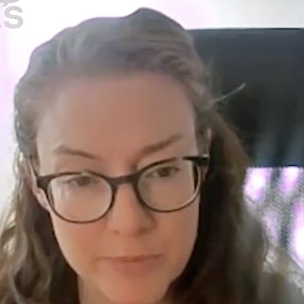
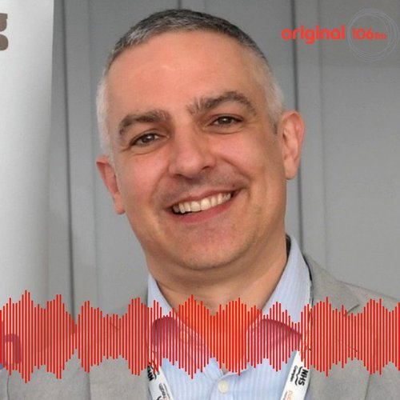

About Us
Community intelligence for data-driven decision-making
We believe that data-driven insights are the key to improving public health in communities across the world. Our research aims to provide individuals and organisations with the tools they need to generate new data and evidence to make informed decisions about smoking cessation and prevention in their community.
From analysing the impact of smoking on public health to understanding the cost of living in different neighbourhoods, our tools and processes provide insights to build data and dialogue in order to realise change and improve public health.
Our platform aggregates data from various sources to provide a comprehensive picture of the cost of living and the cost of smoking in communities with deprived social circumstances. We use state-of-the-art analytics tools to analyse this data and provide actionable insights.
The project is based in Aberdeenshire in partnership with the University of Aberdeen, ASH Scotland, NHS Grampian, and Turning Point Scotland (TPS).
Research Question
The principal research question is: What are the needs of excluded, vulnerable and at-risk populations around smoking cessation and prevention in the context of the cost-of-living crisis?
We have answered the research question through a participatory learning process, combining community-generated intelligence with statistical and administrative data to inform and support health systems responses.
Methodologically, the research makes contributions around developing processes of engagement and dialogue between service users and providers to address health concerns from a pro-social perspective.
We do this by developing processes to engage communities and generate community intelligence on smoking as a social problem. We then facilitate engagements with health systems actors to jointly analyse and interpret data collectively, in action-learning spaces mediated by researchers. We plan to document processes and substantive outputs.
The objectives are to:
- Engage with tobacco consumers and those directly impacted by tobacco consumption in deprived communities to generate new evidence and knowledge on the social circumstances and drivers of smoking, and of cessation and prevention, in the context of the cost-of-living crisis, and document forms, processes, and contexts of engagement;
- Engage health systems actors in analysis and interpretation of evidence generated employing deliberative and dialogue processes connecting service users and providers, and document forms, processes, and contexts of engagement;
- Promote participatory and peer learning approaches in routine health systems functions to enable collective capabilities including by disseminating findings (substantive and methodological) to the public, health systems stakeholders, governmental, technical and research groups.
Our Team
We are a collaborative of social and data scientists, community-based service providers, health officials, policy advocates and community experts.

